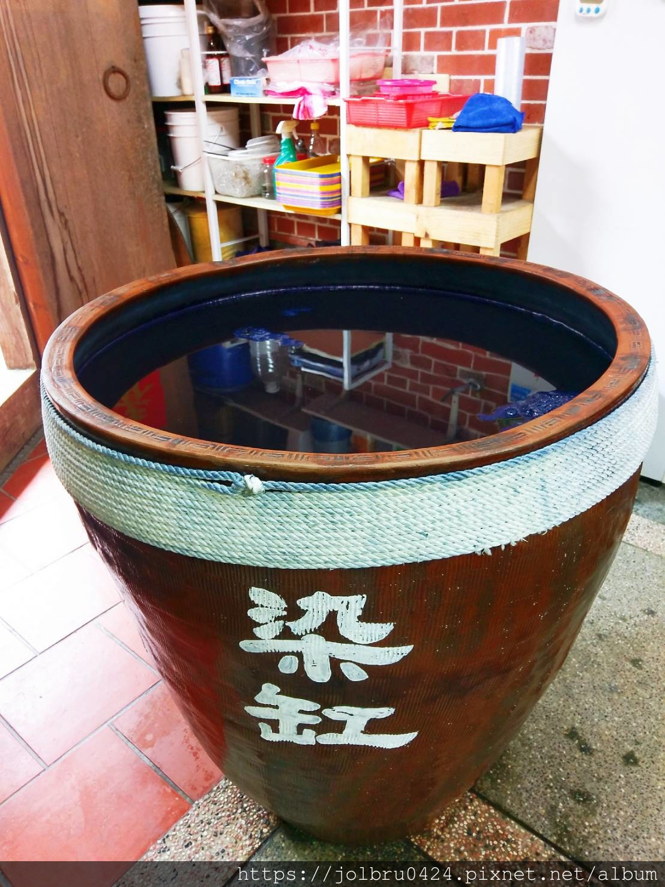

柯山菁帶你遊三峽 — AR 實境導覽
透過電腦視覺圖像特徵比對（Marker-based Image Tracking）與 WebGL 3D 空間渲染，對準專屬圖卡即可召喚虛擬主理人「柯山菁」與互動歷史古蹟！
🎮 虛擬實景模擬器
實體 AR 標記卡
✨ 虛擬主理人 柯山菁 空間導覽中
● 標記已鎖定
歡迎來到三峽民權老街！看看兩旁的紅磚圓拱廊，當年每一棟巴洛克與閩南揉合的山牆下，都是名震北台灣的染布世家喔！✨
百年歷史風華 · 建築巡禮
特色特徵：巴洛克風立面山牆、紅磚牌樓拱門、老街石板路
三峽民權老街牌樓與紅磚拱廊
清代三峽染業極盛時期，民權街上匯聚數十家染坊，立面山牆至今仍完好保留著「染」、「布」等精美商號刻字泥塑，是全台保存最完整的商業染坊老街！
請選擇想探索的地標！
點擊下方卡片可切換模擬器視野，或以實體相機對準對應圖卡即可自動辨別！
紅磚街景
1. 民權老街歷史牌樓
對準老街標記卡，柯山菁將親自為您解密紅磚拱廊山牆上的「染」、「布」商號刻字泥塑！
切換至此標記

技藝染缸2. 百年染缸生化發酵
對準陶缸標記卡，召喚 3D 傳統染缸與氧化發酵粒子，見證黃綠色白靛分子轉為湛藍的化學魔法！
切換至此標記
在地工坊
3. 三峽染工坊文化基地
對準工坊標記卡，展開扎染、夾染等五大技法 3D 飄揚布幔，了解現代文化復育與手作體驗！
切換至此標記